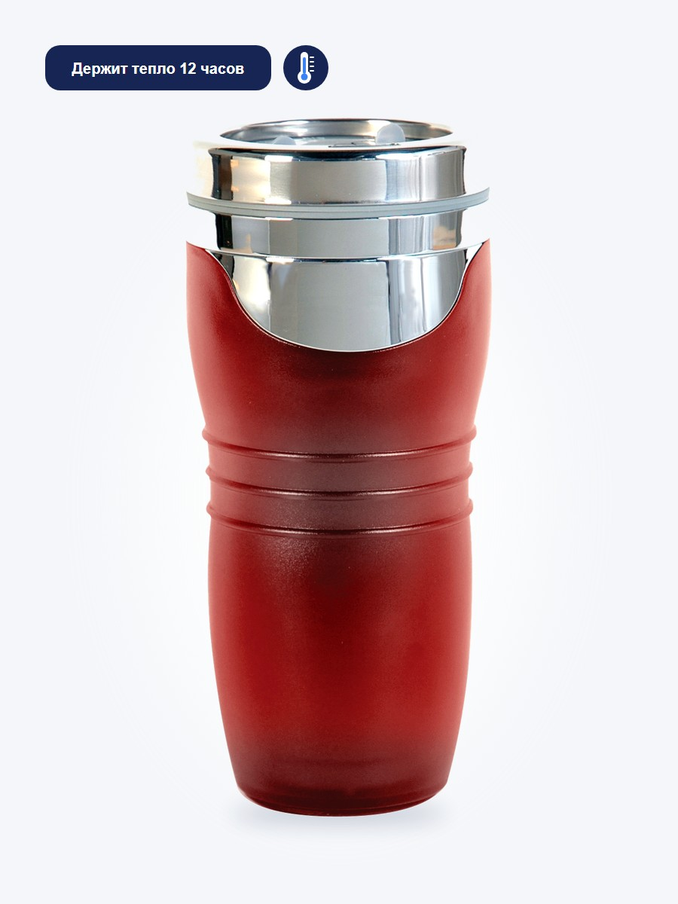
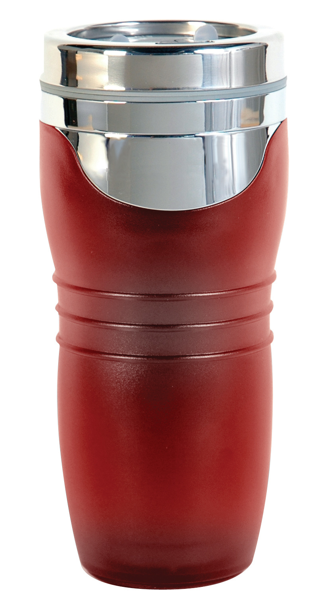

Найдена фотография термокружки на простом светлом фоне (свободная лицензия, Wikimedia Commons), файл сохранён как ishodnoe_foto.jpg. В Figma создан фрейм 900 × 1200 px, фотография вставлена и отмасштабирована так, что товар занимает около 80 % высоты кадра и стоит по центру. Фон фрейма — светлый #F4F6F9.
| Элемент | Параметры |
|---|---|
| Плашка | Rectangle 300 × 60 px, Corner Radius 20, заливка #172554 (тёмно-синяя) |
| Текст | Arial Bold 20 px, белый #FFFFFF, по центру плашки: «Держит тепло 12 часов» |
| Иконка | Термометр 60 × 60 px из простых фигур (Rectangle и Ellipse), белая на тёмно-синем круге |
| Размещение | Плашка — верхний левый угол (60; 60), иконка — справа от плашки, отступ 16 px |
Макет проверен при масштабе 20–25 %: текст плашки и иконка остаются читаемыми и различимыми. Выполнен экспорт фрейма в JPG и PNG, а плашка с иконкой — в SVG.


| Файл | Формат | Размер | Особенности и вывод |
|---|---|---|---|
| Карточка товара | JPG | 85,6 КБ | Сжатие с потерями, в 7 раз легче PNG при том же размере 900 × 1200 px. Оптимальный вариант для загрузки на маркетплейс. |
| Карточка товара | PNG | 611,6 КБ | Сжатие без потерь: точно передаёт плавные полутона металла, но файл тяжёлый и грузится заметно дольше. |
| Плашка и иконка | SVG | 1,3 КБ | Векторный формат: минимальный вес и идеальная резкость контуров и текста при любом масштабировании. |
Почему фото — растровое, а плашка и иконка — векторные, и почему для карточки выбран JPG?
1. Фотография — растровая. На снимке миллионы плавных переходов цвета: металлический блеск, блики, отражения, полутона и мягкие тени. Такое изображение нельзя описать геометрическими формулами, поэтому оно хранится как сетка (матрица) пикселей, где у каждой точки записан свой цвет. Именно из-за огромного количества цветовых значений фотография весит сотни килобайт.
2. Плашка и иконка — векторные. Они состоят из простых геометрических примитивов: прямоугольник со скруглением углов 20, эллипсы (колба термометра), линии (деления) и контуры шрифта с однотонной заливкой. Векторная графика описывает их математически — координатами, радиусами и цветом, — поэтому файл весит около 1 КБ, элементы легко редактируются, а при увеличении контуры остаются идеально чёткими.
3. Для карточки выбран JPG. Готовый макет — это большая фотографическая область (900 × 1200 px) на непрозрачном светлом фоне, прозрачность здесь не нужна. Алгоритм JPG сжимает фото в 7 раз сильнее, чем PNG (85,6 КБ против 611,6 КБ), при этом на глаз артефактов не видно. Лёгкий файл быстрее загружается в каталоге маркетплейса и меньше расходует трафик. PNG оставляют для случаев, где важна прозрачность или максимальное качество, а логотипы, плашки и иконки делают в SVG.